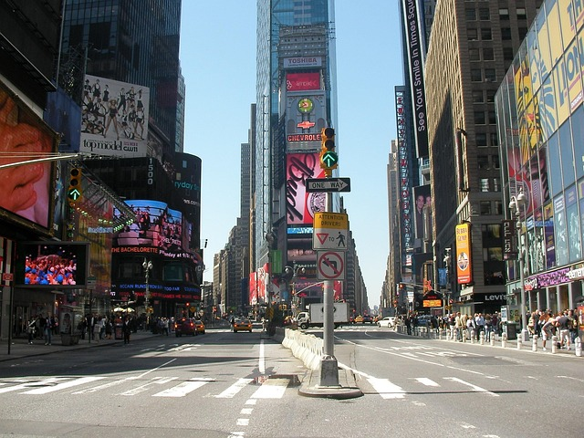
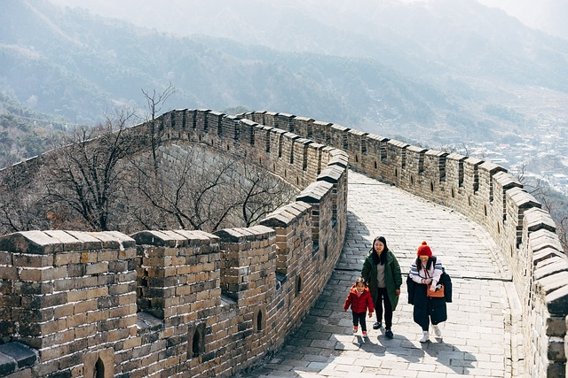
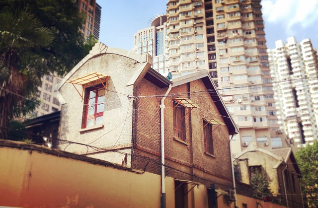
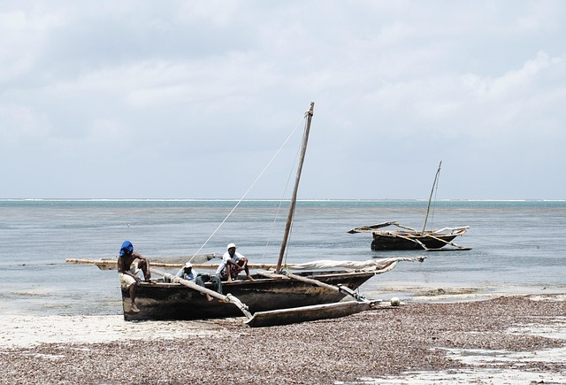
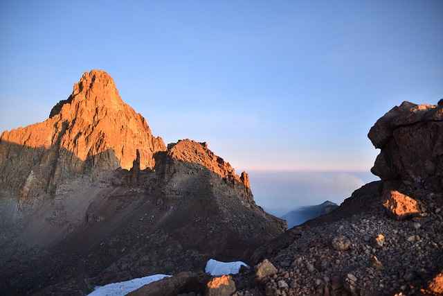

I would like to visit the USA because it has many famous places and cities.
I want to see the Statue of Liberty, Times Square, and maybe go to Hollywood.
The country is very big, so there are beaches, mountains, and parks to explore. I also want to try different kinds of food and visit fun places like Disney World.
I think the USA would be a fun and exciting place to visit.
Best Places in USA
The New York SkylineOutdoors of New York CityTaxi Traffic Bridge in USA

Time Square in USAWashington DC in America
Things you can do in USA:-
Explore the great cities -walk through the streets of New York
Experience U.S lifestyle -have a taste and feel of U.S.A lifestyle
Shopping and Nightlife -experience the lively nightlife in cities like New York
Sports and Entertainment -attend live music concerts and other sports
Visit national parks -discover breathingtaking landscapes at places like Yellowstone
2. China
Why I Want to Visit China
I would like to visit China because it has a lot of interesting places and a very long history.
I want to see the Great Wall of China and visit old temples and palaces. China also has beautiful nature like big mountains and peaceful rivers.
The food is also very tasty and different in each part of the country. I think it would be fun to learn about Chinese culture, try new things, and see how people live in such a big and exciting country.
Best Places in China
China Old Houses and TemplesRural areas in ChinaChinese Market Town

The Historical Great wall of China

The Repulic of China
Things you can do in China:-
Explore the great cities - Walk through the bustling streets of Beijing, Shanghai, and Guangzhou.
Experience Chinese culture - Have a taste of traditional Chinese cuisine and immerse yourself in rich cultural heritage.
Shopping and Nightlife - Experience the lively nightlife in cities like Shanghai and Beijing, from rooftop bars to night markets.
Sports and Entertainment - Attend traditional Chinese opera, watch martial arts performances, or see a live football match.
Visit national parks - Discover breathtaking landscapes at places like Zhangjiajie National Forest Park and Jiuzhaigou Valley.
3. South Africa (S.A)
Why I Want to Visit South Africa
I would like to visit South Africa because it has amazing animals and beautiful nature.
I want to go on a safari and see lions, elephants, and giraffes in the wild.
I also want to learn about the people and history of the country. Places like Cape Town and Table Mountain look very nice.
I think South Africa would be a great place to explore and enjoy nature.
Best Places in South Africa
The Great Cape Town BeachSouth Africa Modern ShopsThe Aerial View of Cape TownSouth African CoastSouth Africa Museum
Things you can do in South Africa:-
Explore the great cities - Walk through the vibrant streets of Cape Town, Johannesburg, and Durban, each offering unique experiences.
Experience South African culture - Taste traditional dishes like braai (barbecue), bunny chow, and bobotie while enjoying yourself in local heritage.
Shopping and Nightlife - Enjoy shopping in places like the Victoria & Alfred Waterfront in Cape Town, and experience the nightlife in areas like Sandton and Long Street.
Sports and Entertainment - Watch a live rugby match, visit iconic soccer stadiums, or enjoy music festivals celebrating South African rhythms and artists.
Visit national parks - Discover breathtaking landscapes and wildlife at Kruger National Park, Table Mountain National Park, and Addo Elephant National Park.
4. Kenya
Why I Want to Visit Kenya
I would like to visit Kenya because it has beautiful wildlife and kind people.
I want to go to the Maasai Mara to see animals like lions and zebras.
Kenya also has mountains, lakes, and the ocean.
I want to learn about the different cultures and enjoy the food.
Kenya seems like a peaceful and exciting place full of nature and adventure.
Best Places in Kenya
Kenyan National ParkThe great Lake Navaisha

Mombasa - Coast in Kenya

Mount Kenya - Biggest in EAKenya Wildlife Migration
Things you can do in Kenya:-
Explore the great cities - Walk through the vibrant streets of Cape Town, Johannesburg, and Durban, each offering unique experiences.
Experience South African culture - Taste traditional dishes like braai (barbecue), bunny chow, and bobotie while enjoying yourself in local heritage.
Shopping and Nightlife - Enjoy shopping in places like the Victoria & Alfred Waterfront in Cape Town, and experience the nightlife in areas like Sandton and Long Street.
Sports and Entertainment - Watch a live rugby match, visit iconic soccer stadiums, or enjoy music festivals celebrating South African rhythms and artists.
Visit national parks - Discover breathtaking landscapes and wildlife at Kruger National Park, Table Mountain National Park, and Addo Elephant National Park.
5. Dubai
Why I Want to Visit Dubai
I would like to visit Dubai because it is a modern city with many tall buildings and beautiful lights.
I want to see the Burj Khalifa, the tallest building in the world. Dubai also has nice beaches,
big shopping malls, and even deserts where you can ride camels.
It looks like a fun and interesting place with both new and traditional things to see.
Explore the great cities - Walk through the futuristic streets of Dubai, home to stunning skyscrapers, luxury shopping, and modern technology.
Experience Emirati culture - Taste traditional Middle Eastern dishes like shawarma, falafel, and dates while enjoying Arabian hospitality.
Shopping and Nightlife - Shop at the Dubai Mall, one of the world's largest shopping destinations, and experience upscale nightlife in places like Downtown Dubai and JBR.
Sports and Entertainment - Watch thrilling camel races, attend Formula 1 events in nearby Abu Dhabi, or enjoy live music performances and global sporting events.
Visit natural wonders & attractions - Take a desert safari through the Arabian dunes, explore the Palm Jumeirah, or marvel at the view from the top of Burj Khalifa, the world's tallest building.